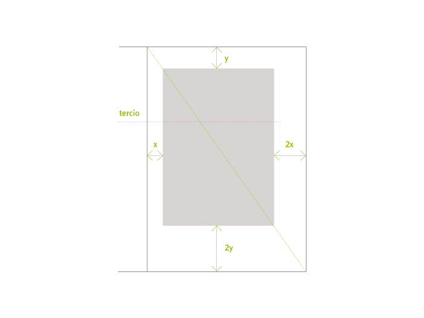

Typography and proportions
Posted by OERT - Apr 27, 2012
Page, Theory
Created by: Marcela Romero (adaptation of the chapter “Principios de formación”, Manual de diseño editorial, Jorge de Buen Unna) – Supervised by: Natalia Pano
Artículo en proceso de traducción
«Since Gutenberg, typography has worked with fixed rules that apply to the configuration of printed pieces. (…) Typographic rules refer not only to the distance between letters and between words, to leading, to type of letters, etc, but also to the setting of proportions for the type page, of columns, margins and page format. (…)» Josef Müller-Brockmann
Proportion
- f. f. Proper arrangement, agreement or correspondence of parts of a piece in relation to a whole, or between things related to each other.
- f. Greater or smaller dimension of something.
- f. Mat. Constant ratio between two variable quantities. Arithmetic, geometric proportion.
~ harmonic.1. f. Mat. A relationship between three numbers or quantities in which the ratio of the first two equals the ratio of the last two; for example, 6,4,3.
~ continued.1. f. Mat. That formed by three consecutive terms in a progression.
(Real Academia Española, 2001, 22º ed.).
Human activity has shown a tendency to order since ancient times. The desire to organize the multiple and diverse characteristics of phenomena and things, is a need deeply rooted in the human race.
Pythagoras (580-500 B.C.) taught that simple numbers and their reciprocal relations, as well as simple geometrical figures represent the intimate secret of nature.
The Greeks also found the relations of the divine proportion and demonstrated that these may be found in human bodies and artists and architects based their pieces of work on them. During the Renaissance, artists recognized the principle of their compositions in measurement and proportions, by studying and applying mathematics and geometry.
Philosophers, architects, and artists from Pythagoras, Vitruvius, Durer, to Le Corbusier, elaborated their theories based on proportion, in which they express the ideas of their times.
Format
We will review a series of relations that will allow us to establish proportions in our work, beginning from the format of the substrate:
ISO 216
Iso 216 The first effort to normalize the commercialization format of paper was the din system (J. C. Lichtenberg, 1742-1799) which tried to combine the esthetic with the useful. Thus he took a rectangle with proportions which are repeated in all submultiples (1: root of 2) and modulated it according to the metric system.
This rectangle 1: root -2 is constructed like this: Given a square (a b c d) one of its sides is prolonged (a b). Standing on one of its vortexes (a) one lets de diagonal drop until it intercepts the prolonged side (a b). This point will be the new vortex of the rectangle. This proportion is equivalent to the irrational number 1.41414…
This rectangle has the peculiarity that when it is divided in two identical rectangles with a line parallel to the shorter side, the resulting rectangles preserve the proportion 1: root of 2.
To make the use of Iso 216 more practical, the basic rectangle was built with a surface of 1m2. This basic rectangle is called A0 and its dimensions are: 0.841 m x 1.189 m.


When dividing it, we obtain the A1 rectangle, dividing this one, we obtain A2 and so on, and thus we obtain all the rectangles for the A series.
These Iso 216 formats (as din formats are called today) have been adopted by many countries that manufacture their papers with approximately 20mm surplus, to preserve the A series as a final format. They are practical to use because of how they behave as regards proportional reductions and enlargements. For instance a double vertical A4 page (in total, a horizontal A3) can be reduced to 70.71% to become a horizontal A4.
Another advantage is that many pieces are produced according to this normalization (envelopes, folders, files, cards, etc.) which allows for a simple coexistence of pieces of different origin. In spite of the advantages of the Iso 216 formats, one problem is that they do not relate to type size, but the worse obstacle is the designers’ resistance to use them, as they consider them monotonous, inflexible or of little esthetical value.
From manuscript to modern times many formats have been used. Some of them are really simple, like the square or rectangle formed by the double square (1:2) and some are more complex, especially when related with the composed type page, such as:
Golden section
Magic qualities have been attributed to this system of proportions. It has been repeatedly used in arts and architecture of all times, but it also appears in natural progressions like leaf veins, tree branches, snails, etc.
The golden number is the irrational 1.61803…, quotient of (1+ root of 5) /2. Its graphic construction is simple:
We start by drawing a square (a b c d) and dividing it in two equal rectangles (a e f d, e b c f). A diagonal is drawn (e c); taking e as a center, we let the diagonal drop until cutting the prolongation of a b, this point (p) determines the long side of the golden rectangle.
We can achieve this same proportion through the Fibonacci series where from the third on, each member is the sum of the two previous ones: 0, 1, 1, 2, 3, 5, 8, 13, 21, 34, 55…
If we divide two consecutive members (higher and lesser) the quotient is close to the golden number: 0, 1, 1, 2, 3, 5, 8, 13, 21, 34, 55, etcétera.
Si se dividen dos miembros consecutivos (mayor/menor) de esta serie, el cociente se aproxima al número de oro:
2 / 1 = 2
3 / 2 = 1,5
5 / 3 = 1,667
13 / 8 = 1,625
21 / 13 = 1,615
34 / 21 = 1,619
55 / 35 = 1,618
Ternary rectangle and others
The ternary is a 2×3 figure. When dividing it transversally in halves, ternary rectangles generate two rectangles in a 3:4 proportion, and the same happens when two rectangles of a 2:3 proportion are put together by their long side. Consecutive divisions throw as a result:
2:3; 3:4; 2:3; 3:4…
From these historically recognized proportions or from other new proportions we might define the format of our work, but we have still to define the grey rectangle (text smear) and its position in the page.
Apart from esthetical considerations, there are some functional considerations we cannot avoid when choosing the size of the text smear because they have an influence on reading.
Number of characters per line
There is no absolute consensus as to this number. For instance for J. Müller-Brockmann, the optimal length of a line is an average of 10 words per line in long texts or 7 words for texts of any length. Emil Ruder says that a line of 50 to 60 letters is easy to read. For Robert Bringhurst, in single column compositions, the ideal line contains 66 characters, with a minimum of 45 and a maximum of 75. In compositions with more than one column the range is between 45 and 60 characters. It also admits longer lines of 85 to 90 characters if the text is well composed, with wide leading or when it is auxiliary information, like foot notes.
There is also an arithmetic calculation: A line with the 26 simple letters of the alphabet is composed, its length will be called lca (length of characters of the alphabet), the optimal number of characters (l) is obtained applying the following formula: l = lca x 1.75
From this dimension we can obtain others, for instance, we will call the maximum line length m and the minimum line length n. Then, we may calculate:
n = l x 0,75 m = l x 1,5
This is the same as saying that the lines will have more than 34.1 letters and less than 67.5, and that an optimal line will have 45.5 characters.
To calculate the width of the type page or columns has an incidence on costs and piece size, but also on reading.
When the reader finishes a line, he receives a stimulus, when the line is too wide, this stimulus is scarce and it becomes arduous to read. If, on the other hand, the line is too narrow, the reader has to move his eyes continuously from side to side.
Variations between the minimum, the optimal and the maximum widths and the leading allow us to test which is the best relation we can obtain between comfortable reading, esthetics and costs.

1: Cantidad mínima de caracteres por línea (las líneas 3, 4 y 10 no presentan un color de texto parejo). 2: cantidad óptima, lectura confortable y buen color. 3: al límite del largo de línea, muy buen color pero lectura no muy cómoda.
Typographic factor
Typographic catalogs included typographic factor tables for each typeface family and type size. This typographic factor is the number of characters that fit in a certain unit of measurement. This typographic factor, multiplied by the width of the type page gives us a good approximation as to how many characters will fit per line including spaces.
Thus we may relate a typographic factor of a certain family and the type size (performance) with the width of the type page to achieve comfortable reading values. We know that if we cannot change family and type size, we may modify the width of the type page, or vice versa, change family and type size if we cannot modify the width of the type page. After making this choice we will have to find the optimal leading for that typeface family composed in lines with that length.
Columns
Columns should not be devised as an esthetical resource but as an efficient tool for the treatment of texts. For instance, in large formats they allow us to work with small type sizes without tiring the reader.
If we remember how the process of reading takes place, recognizing group of words, we will see that columns interrupt the perception of the whole phrase, and the narrower the columns, the worse. On the other hand, if the text is justified, compensation of color in narrower columns is more complex, because they have less space between words. We have already seen that is almost impossible to achieve justified blocks of text with good color if we do not use an efficient and controlled separation into syllables, where not many successive word cuts are repeated so as not to reduce block color with hyphens, and at the same time, without producing open lines because of characters missing in the line. Columns set flush left and with a fray to the right preserve the same space between words, but we have to control the fray by cutting excessively long words so that the right margin is not too irregular.
Margins
There are many interpretations for blank spaces. In some cultures, it is a synonym of emptiness, of waste, in others, instead, it is synonym of light, a valuable form enhancer, an active and indispensable surface for the perception of the form.
But again, margin consideration is not merely esthetic, but also functional and economic. Margins have been reduced through time for economic reasons, when trying to obtain the best possible use of paper, but this has its limits.
Margins fulfill specific tasks that can be summarized as follows:
- To regulate visual weight of the printed area in the page.
- To avoid loosing part of the text in the edge cutting (variation from 1mm to 3 mm).
- To leave a surface free of text in order to manipulate the page comfortably, (especially in external margins).
- To avoid bookbinding from obstructing reading (especially in gutter margins).
As to this, it is convenient to ask first about the page design, because based on the type of binding used, different effects will be obtained.
In a binding at the fold (booklet formed by sheets set into a pile on a trestle to be sewn with a thread or clamps) paper accumulates in the spine, as much as half the thickness of the edition (for example, if the edition is 4 mm thick, 2 mm accumulate in the spine). This accumulation affects each page in a different way, depending on the place it occupies in the booklet.
According to the example above, central pages will have their cut margins 2 mm narrower than the booklet’s external pages.
It could also happen that the binding of this edition were of the binder type, where sheets and cover are glued together in the spine in a single operation. As these sheets are not sewn, the glues used tend to be strong and hard, resulting in a rigid spine that tends to close. Sometimes, if this edition is forced to open wider, the spine may break. In books bound using this method, we should keep in mind that the gutter margin will be reduced, making visualization of this area quite difficult.
Finally, there are esthetic and stylistic arguments we should consider. In many manuscripts and incunabula the text used to occupy 45 to 50% of the page, despite the high costs of paper or parchment. In contrast, nowadays, the surface of the printed paper, in many cases, exceeds 75% of the page. We should know that a harmonic page encourages reading because it is not tiring and this harmony is given by the sum of all factors reviewed up to now: format, width of the type page, and the relation between both: margins.
Relation page/printed area
We will now study some resources to control these relations which have been classically used to place the typographic rectangle out of the center of the page. It is intended to fulfill four basic rules that give them harmony:
- 1. The diagonal of the case should coincide with the diagonal of the page.
- The height of the case should be the same as width of the page.
- The fore-edge (or outer margin) should double the inside margin (or gutter margin).
- The top margin (or head margin) should be half the bottom one (or foot margin). This rule results from the 3 previous ones.
These rules generate harmony, because the printed area and the page have the same proportions and the upper thirds in the two figures rest on the same line. The fact that the printed area is placed slightly high and to one side makes it lighter and more dynamic than if it were placed statically in the center of the page.
We will now review other methods used throughout history to relate page and printed area:
Diagonal method
It comes from applying only the first classical rule: that the diagonal of the page and the diagonal of the typographic rectangle coincide.
Double diagonal
If we complete the previous system by drawing the diagonal of the spread double page (d2) we come up with an interesting solution. On the diagonal of the page (d), we arbitrarily mark the top left corner (a) which will determine the top and the outer margins, from there we will draw a horizontal line until finding the double page diagonal (b), obtaining the external margin.
From b we will draw the vertical h until intercepting d1, obtaining the bottom margin. When this system applies to golden proportion or golden approximation formats (two consecutive numbers of the Fibonacci series) it is called golden section or relation.

Normalized Iso 216 system
When the 4 rules are applied on an iso series format, the resulting printed area has the dimensions of the following series format. That is to say, if the page is A4, the case will be A5.
Ternary Canon
If the page has a 2:3 proportion and the 4 rules are applied, the following relation is produced: the bottom margin is equal to the sum of the lateral margins. This relation was used in many medieval manuscripts. It is also known as secret canon and was divulged by Jan Tschichold in 1953.

The Argentinean Raúl Rosarivo (1903-1966) widely studied this method after he found it in Gutenberg’s 42 line Bible. In the case of the Bible, printed with this method, the page is divided vertically and horizontally in 9 parts, producing 81 2:3 proportion rectangles (same as the page). Only 36 of these rectangles are occupied by the printed page, divided in two columns by a broad river.
The width of this separation is equal to 1/9 of the width of the type case, therefore the text of this edition occupies 39.51% of the surface of the sheet.
Universal scale
This method was developed by Rosarivo, it consists of dividing the page in the same number of horizontal and vertical sections, which should be multiples of 3. Once the division of a vertical has been made a vertical module is used for the gutter margin, a horizontal one for the head margin and two for the bottom margin. Margin’s width turn out to be inversely proportional to the number of divisions.
System 2-3-4-6
The numbers correspond to the relation between margins and derive from the ternary canon. Using this method, we try to fulfill rules 3 and 4, but not necessarily the 2 first rules. It is a quick method to make margins proportional: the unit is given any value and then that number is multiplied by 2, 3, 4, and 6 to find outer, head, gutter and foot margins respectively.

Van der Graaf method
It is useful to find the page’s 9ths in a graphic, not an arithmetical manner. In order to do this, the 6 diagonals of the double page are drawn. From point a, a diagonal is raised up to the upper border of the paper. From there, a straight line is drawn until the intersection of b in the other page. In the point where this straight line crosses the diagonal d1, the left upper vertex of the text is determined. This method is the same as dividing the height and width of the page in 9ths and distributing the margins according to the ternary canon (1/9 for the narrower ones and 2/9 for the wider ones).

Inverted margins
The decision of having a narrow gutter margin in the spine, resulting from margins which are half as narrow as the outer margins, can bring about some problems depending to the type of binding used. To avoid these problems, we can invert the relation leaving the wide margins in the center of the piece.

In books with good spine opening this will create a separation of the printed areas in the double page which should be taken into consideration and studied in each case.
Arbitrary margins
Tschichold says: «The tasks of the book designer and of the graphic artist are essentially different, while the latter is in constant search for new means of expression, pushed to an extreme by his desire to find a personal style, the book designer must be a loyal and discrete slave of the written word. […] Book designing is not a field for those who want to invent the ’style of the moment’ or to create something ‘new’».
We must understand what Tschichold says in the field of text book design, knowing that «artistic books» or non conventional books should be treated differently and using other design concepts which consider their particular features, so as to obtain the best possible transmission of contents and manner of reading.
The use of arbitrary margins should be taken into consideration for short text pieces, of quick reading or for pieces of non continuous texts, such as brochures, advertisements, poems, dictionaries, directories, etc., where though attention should be put to margins, other criteria may be used for setting them , always keeping in mind the 4 points mentioned at the beginning:
Avoid loosing text when edge cutting the paper; leave some free space in order to grab the printed material without covering the text with our hands; avoid possible inaccuracies of the print run, and avoid the binding from making reading the text in the spine difficult.
- MÜLLER-BROCKMANN, Josef, Sistemas de retículas. Gustavo Gili, México 1992.
- DE BUEN UNNA, Jorge. Manual de diseño editorial. 3.ª edición, corregida y aumentada. Trea Ediciones, España, 2009.
- MARTIN, Douglas, El diseño en el libro. Ediciones Pirámide, Madrid, 1994.
Referencia
- Real Academia Española. (2001). Proporción. En Diccionario de la lengua española (22.a ed.). Recuperado de http://lema.rae.es/drae/?val=Proporci%C3%B3n
Esta entrada también está disponible en: Spanish

Related Posts
-
Design and journalism
April 27, 2012
Magazine design: between graphic journalism and journalistic communication. Features. Graphic journalism: content and codes. Journalism genres: characteristics and considerations about news, interviews and stories. Text structure and hierarchy.
-
Graphic resources for regular editions
April 27, 2012
Models for periodical publications: constants and variables. Publication structure. Navigation resources. Text editing: titles (header, banner, title or headline, and sub headings, lead or summary), fast reading elements (epigraph, highlight, subordinated notes, tables, summaries). Relation between form and content.
-
Composition and modules
April 27, 2012
Order and space. The typographic grid as a tool for design and communication. Line spacing as modulation unit. Construction of the typographic grid: vertical and horizontal modulation. Legibility and modulation.
-
Typography and linguistics
April 27, 2012
Oral and written texts, features. Text structure, macrostructure and superstructure. Types of superstructures. Typology and textual genres. Text and context. Design and linguistic mediation. Conditions for textuality.
 English
English Español
Español 
{kind=link}
{kind=link}
{kind=link}